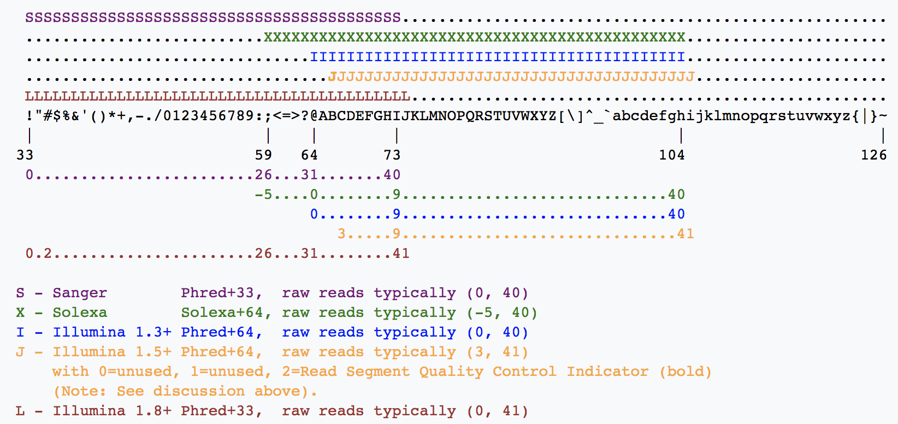
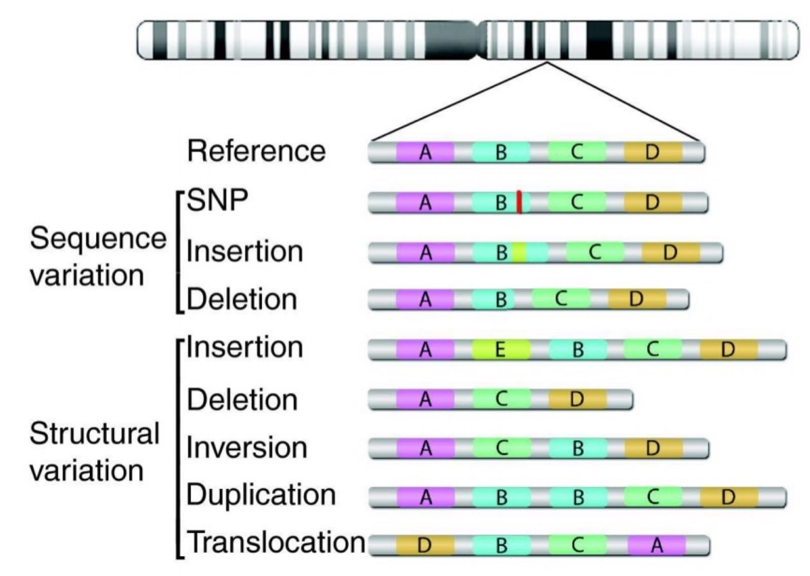
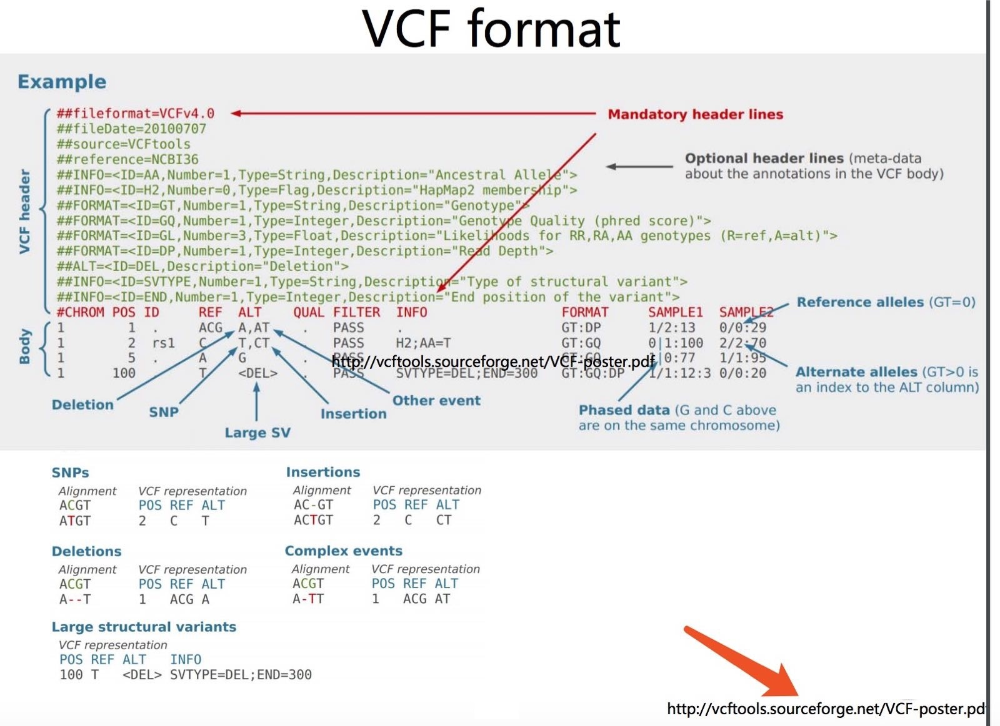

各行各业都有在自己的标准体系，生物信息学数据分析也不例外，各个厂商出品的芯片系列，还有各种NGS组学分析，都会涉及到不同的分析步骤，有着丰富多样的中间文件。其中一些常用的文件就被规定成文件格式。 文件格式那么多，都可以了解一二，当然，不需要背诵它们所有的细节，不过对下面我们单独拿出来详细介绍的还是尽量要耳熟能详。
简单来说，测序得到的是带有质量值的碱基序列(fastq格式)；参考基因组是(fasta格式)；用比对工具把fastq格式的序列回帖到对应的fasta格式的参考基因组序列，就可以产生sam格式的比对文件；把sam格式的文本文件压缩成二进制的bam文件可以节省空间；如果对参考基因组上面的各个区段标记它们的性质，比如哪些区域是外显子，内含子，UTR等等，这就是gtf/gff格式； 如果只是为了单纯描述某个基因组区域，就是bed格式文件，记录染色体号以及起始终止坐标，正负链即可；如果是记录某些位点或者区域碱基的变化，就是VCF文件格式；如果仅仅是为了追踪参考基因组的各个区域的覆盖度，测序深度就可以用bigwig/wig格式。上面是对这些生信中的数据格式进行简介，下面将对这些数据格式进行详述。
FASTQ
简介
FASTQ用于保存生物序列（通常是核酸序列）和其测序质量信息的标准格式。 其序列以及质量信息都是使用一个ASCII字符标示，最初由Sanger开发。 目的是将FASTA序列与质量数据放到一起，目前已经成为高通量测序结果的实施标准。
一、定义和示例
FASTQ文件中每个序列通常有四行：
第一行是序列标识以及相关的描述信息，以‘@’开头
第二行是序列
第三行以‘+’开头，后面是序列标示符、描述信息，或者什么也不加，但是“+”不能少。
第四行，是质量信息，和第二行的序列相对应，每一个序列都有一个质量评分，根据评分体系的不同，每个字符的含义表示的数字也不相同。
一个简单的示例如下：
@SEQ_ID
GATTTGGGGTTCAAAGCAGTATCGATCAAATAGTAAATCCATTTGTTCAACTCACAGTTT
+
!''*((((***+))%%%++)(%%%%).1***-+*''))**55CCF>>>>>>CCCCCCC65
二、序列标识
上面说到第一行是序列标识以及相关的描述信息，以‘@’开头。可以像上面的示例那么简单，但如果是正规测序仪下机的真实数据，通常会很复杂。比如：
@EAS139:136:FC706VJ:2:2104:15343:197393 1:Y:18:ATCACG
这个序列标识以及相关描述信息以冒号分割，每一个字段信息如下：
| 字段 | 解释 |
|---|---|
| EAS139 | the unique instrument name |
| 136 | the run id |
| FC706VJ | the flowcell id |
| 2 | flowcell lane |
| 2104 | tile number within the flowcell lane |
| 15343 | ‘x’-coordinate of the cluster within the tile |
| 197393 | ‘y’-coordinate of the cluster within the tile |
| 1 | the member of a pair, 1 or 2 (paired-end or mate-pair reads only) |
| Y | Y if the read fails filter (read is bad), N otherwise |
| 18 | 0 when none of the control bits are on, otherwise it is an even number |
| ATCACG | index sequence |
当然，上面的表格介绍的只是其中一个测序仪下机数据，如果是其它机器，产商可以自由定义标识符格式，因为fastq格式的第一行只需要以@符号开头即可。
不过，也有一些时候fastq数据并不是测序仪直接下机的，而且他人上传到了NCBI的SRA中心，我们下载下来解压后一般就没有了测序仪相关的标识，例子如下：
@SRR001666.1 071112_SLXA-EAS1_s_7:5:1:817:345 length=36
GGGTGATGGCCGCTGCCGATGGCGTCAAATCCCACC
+SRR001666.1 071112_SLXA-EAS1_s_7:5:1:817:345 length=36
IIIIIIIIIIIIIIIIIIIIIIIIIIIIII9IG9IC
三、质量编码格式
质量评分指的是一个碱基的错误概率的对数值。 其最初在Phred拼接软件中定义与使用，其后在许多软件中得到使用。 其质量得分与错误概率的对应关系见下表：
| PHRED QUALITY SCORE | PROBABILITY OF INCORRECT BASE CALL | BASE CALL ACCURACY |
|---|---|---|
| 10 | 1 in 10 | 90 % |
| 20 | 1 in 100 | 99% |
| 30 | 1 in 1000 | 99.9% |
| 40 | 1 in 10000 | 99.99% |
| 50 | 1 in 100000 | 99.999% |
Phred quality scores Q are defined as a property which is logarithmically related to the base-calling error probabilities P. Q=-10lgP
除了Phred质量得分换算标准，还有就是Solexa标准：是把P换成p/(1-p)
对于每个碱基的质量编码标示，不同的软件采用不同的方案，目前有5种方案：
- Sanger，Phred quality score，值的范围从0到92，对应的ASCII码从33到126，但是对于测序数据（raw read data）质量得分通常小于60，序列拼接或者mapping可能用到更大的分数。
- Solexa/Illumina 1.0, Solexa/Illumina quality score，值的范围从-5到63，对应的ASCII码从59到126，对于测序数据，得分一般在-5到40之间。
- Illumina 1.3+，Phred quality score，值的范围从0到62对应的ASCII码从64到126，低于测序数据，得分在0到40之间；
- Illumina 1.5+，Phred quality score，但是0到2作为另外的标示。
- Illumina 1.8+
下面是更为直观的表示：

四、文件后缀
没有特别的规定，通常使用.fq, .fastq, .txt等。 但是要注意，这个文件格式主要指的是文本文件里面的每行每列的内容规则，并不是我们常见的计算机领域的mp3,mp4,avi,xls,doc等等。
其它注意事项:
- 双端测序一般有两个文件（也可通过某种规则把两个文件合并成一个）。
- 第一个文件与第二个文件的行数完全一样，且测序序列的排列顺序完全一致。
- 在第一个文件中，描述信息的结尾是“/1”，表示是双端测序的一端；第二个文件中同样位置/行数的相对应的测序序列的描述信息则以“/2”结尾，表示是双端测序的另一端。（2.2.2的表2-5中有叙述）
FASTA
简介
FASTA格式用于表示核苷酸序列或氨基酸序列的格式。 在这种格式中碱基对或氨基酸用单个字母来编码，且允许在序列前添加序列名及注释。 fasta序列格式是blast组织数据的基本格式，无论是数据库还是查询序列，大多数情况都使用fasta序列格式。 它要比上一小节介绍的FASTQ格式简明很多。
一、定义和示例
总的来说，Fasta格式开始于一个标识符：">"，然后是一行描述，下面是的序列，直到下一个">",表示下一条。
下面是一个来源于NCBI的fasta格式序列：
>gi|187608668|ref|NM_001043364.2| Bombyx mori moricin (Mor), mRNA
AAACCGCGCAGTTATTTAAAATATGAATATTTTAAAACTTTTCTTTGTTTTTA
TTGTGGCAATGTCTCTGGTGTCATGTAGTACAGCCGCTCCAGCAAAAATACCT
ATCAAGGCCATTAAGACTGTAGGAAAGGCAGTCGGTAAAGGTCTAAGAGCCAT
ATCAAGGCCATTAA
Fasta格式首先以大于号“>”开头，接着是序列的标识符“gi|187608668|ref|NM_001043364.2|”，然后是序列的描述信息。 换行后是序列信息，序列中允许空格，换行，空行，直到下一个大于号，表示该序列的结束。 下面简单给一个表格说明序列来源的数据库与对应的标识符
| Database Name数据库名称 | Identifier Syntax 标识符 |
|---|---|
| GenBank | ```gb |
| EMBL Data Library | ```emb |
| DDBJ, DNA Database of Japan | ``` dbj |
| NBRF PIR | ```pir |
| Protein Research Foundation | ``` prf |
| SWISS-PROT | ```sp |
| Brookhaven Protein Data Bank | ```pdb |
| Patents | ```pat |
| GenInfo Backbone Id | ``` bbs |
| General database identifier | ``` gnl |
| NCBI Reference Sequence | ``` ref |
| Local Sequence identifier | ```lcl |
通常情况下序列的标识符不会像上面的例子那样复杂，再复杂的标识符也是有规则的，上面的标识符是NCBI定义的，可以去其官网了解详情。
二、序列中字母代表的含义
FASTA格式支持的核苷酸代码如下：
| 核苷酸代码 | 意义 |
|---|---|
| A | Adenosine |
| C | Cytosine |
| G | Guanine |
| T | Thymidine |
| U | Uracil |
| R | G A (puRine) |
| Y | T C (pYrimidine) |
| K | G T (Ketone) |
| M | A C (aMino group) |
| S | G C (Strong interaction) |
| W | A T (Weak interaction) |
| B | G T C (not A) (B comes after A) |
| D | G A T (not C) (D comes after C) |
| H | A C T (not G) (H comes after G) |
| V | G C A (not T, not U) (V comes after U) |
| N | A G C T (aNy) |
| X | masked |
| - | gap of indeterminate length |
FASTA格式支持的氨基酸代码如下：
| 氨基酸代码 | 意义 |
|---|---|
| A | Alanine |
| B | Aspartic acid or Asparagine |
| C | Cysteine |
| D | Aspartic acid |
| E | Glutamic acid |
| F | Phenylalanine |
| G | Glycine |
| H | Histidine |
| I | Isoleucine |
| K | Lysine |
| L | Leucine |
| M | Methionine |
| N | Asparagine |
| O | Pyrrolysine |
| P | Proline |
| Q | Glutamine |
| R | Arginine |
| S | Serine |
| T | Threonine |
| U | Selenocysteine |
| V | Valine |
| W | Tryptophan |
| Y | Tyrosine |
| Z | Glutamic acid or Glutamine |
| X | any |
| * | translation stop |
| - | gap of indeterminate length |
注意事项：
对于自己构建的序列数据库（序列不是来源与NCBI或其他数据），可以采用“gnl|database|identifier”或者“lcl|identifier”格式，以保证可以使用blast的所有功能。 database或者identifier是需要指定的数据库的标识和序列标识，指定的名称可以用大小写字母、数字、下划线“_”、破折号“-”或者点号“.”。 注意名称是区分大小写的，同时不能出现空格，空格表示序列标识符结束。
数据库中的序列标识符必须保证唯一，许多时候格式数据库是formatdb报告错误，就是因为标示符重复，还有一点需要强调的是序列不能为空，否则也会报错。
SAM格式
简介
SAM格式主要应用于测序序列mapping到基因组上的结果表示，当然也可以表示任意的多重比对结果。 SAM是一种序列比对格式标准，由sanger制定，是以TAB为分割符的文本格式。 SAM的全称是sequence alignment/map format。
一、定义和示例
SAM分为两部分，注释信息（header section ）和比对结果部分 （alignment section）。 通常是把FASTQ文件格式的测序数据比对到对应的参考基因组版本得到的。 注释信息并不是SAM文件的重点，是该SAM文件产生以及被处理过程的一个记录，规定以@开头，用不同的tag表示不同的信息，主要有：
- @HD，说明符合标准的版本、对比序列的排列顺序；
- @SQ，参考序列说明；
- @RG，比对上的序列（read）说明；
- @PG，使用的程序说明；
- @CO，任意的说明信息。
一个简单的SAM文件例子如下：
@HD VN:1.0 SO:unsorted
@SQ SN:chr1 LN:249250621
@SQ SN:chr2 LN:243199373
@PG ID:Bowtie VN:1.0.0 CL:"bowtie genome/hg19 -q reads/SRR3101251.fastq -m 1 -p 4 -S"
SRR3101251.1 0 chr19 9486878 255 49M * 0 0 NTACTCCCACTACTCTCAGATTCAAGCAATCCTCCCACCCTAGCCCACC #1=DDDFFHHHHHIHHIJJJHIJIIJIHIFHJIIJJJJJJJIIJJJJJJ XA:i:1 MD:Z:0A48 NM:i:1
SRR3101251.5 16 chr2 240279787 255 49M * 0 0 CCTGAATCCATCAGAGCAGCCGGGCTGTGACACTCACTGTCATGATGTT JIJJIHIIIIJJJJJJJJJGHJJJJIIHJHICJIGCHHHHHFFFFFCCC XA:i:0 MD:Z:49 NM:i:0
SRR3101251.6 4 * 0 0 * * 0 0 NATTCCCACCTATGAGTGAGAATATGCGGTGTTTGGTTTTTTGTTCTTG #1=DDDFFHHHHHJJJGHIJJJJJJJJJJCGGIIJJIIJJJIJHJIIJJ XM:i:1
前四行是注释信息，其后是比对结果，下面对比对结果进行解释，它是SAM格式文件的精华部分。
二、比对结果详解
SRR035022.2621862 163 16 59999 37 22S54M = 60102 179 CCAACCCAACCCTAACCCTAACCCTAACCCTAACCCTAACCCTAACCCTAACCCTAACCGACCCTCACCCTCACCC >AAA=>?AA>@@B@B?AABAB?AABAB?AAC@B?@AB@A?A>A@A?AAAAB??ABAB?79A?AAB;B?@?@<=8:8 XT:A:M XN:i:2 SM:i:37 AM:i:37 XM:i:0 XO:i:0 XG:i:0 RG:Z:SRR035022 NM:i:2 MD:Z:0N0N52 OQ:Z:CCCCCCCCCCCCCCCCCCCCCCCCCCCCCCBCCCCCCBBCC@CCCCCCCCCCACCCCC;CCCBBC?CCCACCACA@
所以在我们的例子中，每一个字段的说明如下：
QNAME SRR035022.2621862
FLAG 163
RNAME 16
POS 59999
MAQ 37
CIGAR 22S54M
MRNM =
MPOS 60102
ISIZE 179
SEQ CCAACCCAACCCTAACCCTAACCCTAACCCTAACCCTAACCCTAACCCTAACCCTAACCGACCCTCACCCTCACCC
QUAL >AAA=>?AA>@@B@B?AABAB?AABAB?AAC@B?@AB@A?A>A@A?AAAAB??ABAB?79A?AAB;B?@?@<=8:8
TAG XT:A:M
TAG XN:i:2
TAG SM:i:37
TAG AM:i:37
TAG XM:i:0
TAG XO:i:0
TAG XG:i:0
TAG RG:Z:SRR035022
TAG NM:i:2
TAG MD:Z:0N0N52
TAG OQ:Z:CCCCCCCCCCCCCCCCCCCCCCCCCCCCCCBCCCCCCBBCC@CCCCCCCCCCACCCCC;CCCBBC?CCCACCACA
比对结果部分（alignment section），每一行表示一个片段（segment）的比对信息，包括11个必须的字段（mandatory fields）和一个可选的字段，字段之间用tag分割。
必须的字段有11个，顺序固定，不可自行改动，根据字段定义，可以为’0‘或者’*‘，这是11个字段包括：
- QNAME，比对片段的（template）的编号；
- FLAG，位标识，template mapping情况的数字表示，每一个数字代表一种比对情况，这里的值是符合情况的数字相加总和； （picard专门有一个工具解读sam的flag:http://broadinstitute.github.io/picard/explain-flags.html）
1 The read is one of a pair read是pair中的一条（read表示本条read，mate表示pair中的另一条read）
2 The alignment is one end of a proper paired-end alignment pair一正一负完美的比对上
4 The read has no reported alignments 这条read没有比对上
8 The read is one of a pair and has no reported alignments mate没有比对上
16 The alignment is to the reverse reference strand 这条read反向比对
32 The other mate in the paired-end alignment is aligned to the reverse reference strand mate反向比对
64 The read is the first (#1) mate in a pair 这条read是read1
128 The read is the second (#2) mate in a pair 这条read是read2
- RNAME，参考序列的编号，如果注释中对SQ-SN进行了定义，这里必须和其保持一致，另外对于没有mapping上的序列，这里是’*‘；
- POS，比对上的位置，注意是从1开始计数，没有比对上，此处为0；
- MAPQ，mappint的质量；
- CIGAR，简要比对信息表达式（Compact Idiosyncratic Gapped Alignment Report），其以参考序列为基础，使用数字加字母表示比对结果，比如3S6M1P1I4M，前三个碱基被剪切去除了，然后6个比对上了，然后打开了一个缺口，有一个碱基插入，最后是4个比对上了，是按照顺序的；
“M”表示 match或 mismatch；
“I”表示 insert；
“D”表示 deletion；
“N”表示 skipped（跳过这段区域）；
“S”表示 soft clipping（被剪切的序列存在于序列中）；
“H”表示 hard clipping（被剪切的序列不存在于序列中）；
“P”表示 padding；
“=”表示 match；
“X”表示 mismatch（错配，位置是一一对应的）；
- RNEXT，下一个片段比对上的参考序列的编号，没有另外的片段，这里是’*‘，同一个片段，用’=‘；
- PNEXT，下一个片段比对上的位置，如果不可用，此处为0；
- TLEN，Template的长度，最左边得为正，最右边的为负，中间的不用定义正负，不分区段（single-segment)的比对上，或者不可用时，此处为0；
- SEQ，序列片段的序列信息，如果不存储此类信息，此处为’*‘，注意CIGAR中M/I/S/=/X对应数字的和要等于序列长度；
- QUAL，序列的质量信息，格式同FASTQ一样。read质量的ASCII编码。
- 可选字段（optional fields)，格式如：TAG:TYPE:VALUE，其中TAG有两个大写字母组成，每个TAG代表一类信息，每一行一个TAG只能出现一次，TYPE表示TAG对应值的类型，可以是字符串、整数、字节、数组等。
三、SAM要处理好的问题
- 非常多序列（read)，mapping到多个参考基因组（reference）上
- 同一条序列，分多段（segment）比对到参考基因组上
- 无限量的，结构化信息表示，包括错配、删除、插入等比对信息
要注意的几个概念，以及与之对应的模型：
- reference
- read
- segment
- template（参考序列和比对上的序列共同组成的序列为template）
- alignment
- seq
BAM 格式
简介
本质上就是二进制压缩的SAM文件，大部分生物信息学流程都需要这个格式，为了节省存储空间以及方便索引。
# BiocInstaller::biocLite('Rsamtools')
library(Rsamtools)
test_bam_file <- 'data/CHIP-seq.bam'
#fileter bam
filter <- FilterRules(list(MinWidth = function(x) width(x$seq) > 35))
res <- scanBam(test_bam_file, filter=filter)[[1]]
sapply(res, head)
从上面的例子（需要在R里面运行）可以看到BAM文件需要用特殊的方法来读取，可以是R里面的Rsamtools包，也可以是linux环境下安装好的samtools软件，因为它是二进制文件，不能像普通的文本文件那样来打开。
我们用R里面的head函数查看了该BAM文件的前6行，比对的flag分别是16 0 16 16 0 0,说明有3条序列没有成功比对到基因组。width信息说明该序列长度都是36bp。序列的碱基以及对应的碱基质量也如上所述。
VCF
简介
Variant Call Format（VCF）是一个用于存储基因序列突变信息的文本格式。 可以表示单碱基突变, 插入/缺失, 拷贝数变异和结构变异等。 通常是对BAM文件格式的比对结果进行处理得到的。 BCF格式文件是VCF格式的二进制文件。
一、定义和示例

如上图所示，vcf记录的即为各类型的变异。例如：点突变，拷贝数变异，插入，缺失等结构变异。
VCF分为两部分，注释信息和变异位点记录信息。
注释信息通常以#开头，会描述该VCF版本，目前以4.2居多，然后会一行行记录变异位点信息里面会出现的所有TAG。
下面这个是NCBI的dbSNP数据库里面的人类的vcf文件的部分截取：
##fileformat=VCFv4.0
##fileDate=20160601
##source=dbSNP
##dbSNP_BUILD_ID=147
##reference=GRCh37.p13
##phasing=partial
##variationPropertyDocumentationUrl=ftp://ftp.ncbi.nlm.nih.gov/snp/specs/dbSNP_BitField_latest.pdf
##INFO=<ID=RS,Number=1,Type=Integer,Description="dbSNP ID (i.e. rs number)">
##INFO=<ID=RSPOS,Number=1,Type=Integer,Description="Chr position reported in dbSNP">
##INFO=<ID=RV,Number=0,Type=Flag,Description="RS orientation is reversed">
#CHROM POS ID REF ALT QUAL FILTER INFO
1 10177 rs201752861 A C . . RS=201752861;RSPOS=10177;dbSNPBuildID=137;SSR=0;SAO=0;VP=0x050000020005000002000100;GENEINFO=DDX11L1:100287102;WGT=1;VC=SNV;R5;ASP
1 10177 rs367896724 A AC . . RS=367896724;RSPOS=10177;dbSNPBuildID=138;SSR=0;SAO=0;VP=0x050000020005170026000200;GENEINFO=DDX11L1:100287102;WGT=1;VC=DIV;R5;ASP;VLD;G5A;G5;KGPhase3;CAF=0.5747,0.4253;COMMON=1
1 10228 rs143255646 TA T . . RS=143255646;RSPOS=10229;dbSNPBuildID=134;SSR=0;SAO=0;VP=0x050000020005000002000200;GENEINFO=DDX11L1:100287102;WGT=1;VC=DIV;R5;ASP
1 10228 rs200462216 TAACCCCTAACCCTAACCCTAAACCCTA T . . RS=200462216;RSPOS=10229;dbSNPBuildID=137;SSR=0;SAO=0;VP=0x050000020005000002000200;GENEINFO=DDX11L1:100287102;WGT=1;VC=DIV;R5;ASP
1 10230 rs775928745 AC A . . RS=775928745;RSPOS=10231;dbSNPBuildID=144;SSR=0;SAO=0;VP=0x050000020005000002000200;GENEINFO=DDX11L1:100287102;WGT=1;VC=DIV;R5;ASP
1 10231 rs200279319 C A . . RS=200279319;RSPOS=10231;dbSNPBuildID=137;SSR=0;SAO=0;VP=0x050000020005000002000100;GENEINFO=DDX11L1:100287102;WGT=1;VC=SNV;R5;ASP
1 10234 rs145599635 C T . . RS=145599635;RSPOS=10234;dbSNPBuildID=134;SSR=0;SAO=0;VP=0x050100020005000002000100;GENEINFO=DDX11L1:100287102;WGT=1;VC=SNV;SLO;R5;ASP
1 10235 rs540431307 T TA . . RS=540431307;RSPOS=10235;dbSNPBuildID=142;SSR=0;SAO=0;VP=0x050000020005040024000200;GENEINFO=DDX11L1:100287102;WGT=1;VC=DIV;R5;ASP;VLD;KGPhase3;CAF=0.9988,0.001198;COMMON=0
1 10247 rs796996180 T C . . RS=796996180;RSPOS=10247;dbSNPBuildID=146;SSR=0;SAO=0;VP=0x050100020005000002000100;GENEINFO=DDX11L1:100287102;WGT=1;VC=SNV;SLO;R5;ASP
限于文章篇幅限制，我只是截取了该VCF文件的部分注释信息，很明显可以看到注释信息刚刚开始的几行其实是没有规则的，只需要以##开头即可，描述一些必备信息，包括参考基因组版本，得到该VCF文件的命令是什么等等。
后面的都是以INFO=<ID=······>的形式来介绍一个个TAG，这些TAG都是会在VCF的正文，变异位点记录里面用到的。而且每个tag都很容易理解，就是对应的英文描述而已。
接下来我们看看比较复杂的正文部分，就是变异位点记录信息。
#CHROM POS ID REF ALT QUAL FILTER INFO FORMAT sample1
1 858691 . TG T 222 . INDEL;IDV=37;IMF=0.486842;DP=76;VDB=0.110516;SGB=-0.693139;MQSB=1;MQ0F=0;ICB=1;HOB=0.5;AC=1;AN=2;DP4=12,24,14,22;MQ=60 GT:PL 0/1:255,0,255
1 858801 . A G 222 . DP=59;VDB=0.728126;SGB=-0.692717;RPB=0.748623;MQB=1;MQSB=1;BQB=0.963908;MQ0F=0;ICB=1;HOB=0.5;AC=1;AN=2;DP4=14,17,11,12;MQ=60 GT:PL 0/1:255,0,255
1 859404 . C G 222 . DP=81;VDB=0.0896228;SGB=-0.693132;RPB=0.849598;MQB=1;MQSB=1;BQB=0.486963;MQ0F=0;ICB=1;HOB=0.5;AC=1;AN=2;DP4=17,15,18,16;MQ=60 GT:PL 0/1:255,0,255
1 859690 . C G 222 . DP=75;VDB=0.0662538;SGB=-0.69312;RPB=0.959181;MQB=1;MQSB=1;BQB=0.962588;MQ0F=0;ICB=1;HOB=0.5;AC=1;AN=2;DP4=20,15,18,14;MQ=60 GT:PL 0/1:255,0,255
1 859701 . C G 222 . DP=74;VDB=0.274853;SGB=-0.693127;RPB=0.97201;MQB=1;MQSB=1;BQB=0.717302;MQ0F=0;ICB=1;HOB=0.5;AC=1;AN=2;DP4=19,15,19,14;MQ=60 GT:PL 0/1:255,0,255
1 859913 . A G 222 . DP=67;VDB=0.756546;SGB=-0.693139;RPB=0.950685;MQB=1;MQSB=1;BQB=0.662934;MQ0F=0;ICB=1;HOB=0.5;AC=1;AN=2;DP4=18,10,19,17;MQ=60 GT:PL 0/1:255,0,255
1 860416 . G A 222 . DP=79;VDB=0.673886;SGB=-0.693144;RPB=0.11919;MQB=1;MQSB=1;BQB=0.992984;MQ0F=0;ICB=1;HOB=0.5;AC=1;AN=2;DP4=18,15,24,15;MQ=60 GT:PL 0/1:255,0,255
每一行代表一个Variant的信息。
CHROM 和 POS：代表参考序列名和variant的位置；如果是INDEL的话，位置是INDEL的第一个碱基位置。
ID：variant的ID。比如在dbSNP中有该SNP的id，则会在此行给出(这个需要自己下载dbSNP数据库文件进行注释才有的)。 若没有或者注释不上，则用’.‘表示其为一个novel variant。
REF 和 ALT：参考序列的碱基 和 Variant的碱基。
QUAL：Phred格式(Phred_scaled)的质量值，表示在该位点存在variant的可能性；该值越高，则variant的可能性越大； 计算方法：Phred值 = -10 * log (1-p) p为variant存在的概率; 通过计算公式可以看出值为10的表示错误概率为0.1，该位点为variant的概率为90%。
FILTER：使用上一个QUAL值来进行过滤的话，是不够的。GATK能使用其它的方法来进行过滤，过滤结果中通过则该值为”PASS”;若variant不可靠，则该项不为”PASS”或”.”。
INFO： 这一行是variant的详细信息，内容很多，以下再具体详述。
FORMAT 和 sample1 ：这两行合起来提供了 sample1 这个sample的基因型的信息。’sample1′代表这该名称的样品，是由SAM/BAM文件中的@RG下的 SM 标签决定的。 (当然并不是所有的VCF都是由一个BAM文件产生，比如数据库dbSNP提供的vcf文件，就没有样本信息啦)
1、第8列的INFO
该列信息最多了，都是以 “TAG=Value”, 并使用”;”分隔的形式 。 其中 很多的注释信息在VCF文件的头部注释中给出。以下是这些TAG的解释
AC，AF 和 AN：AC(Allele Count) 表示该Allele的数目；AF(Allele Frequency) 表示Allele的频率； AN(Allele Number) 表示Allele的总数目。对于1个diploid sample而言：则基因型 0/1 表示sample为杂合子，Allele数为1(双倍体的sample在该位点只有1个等位基因发生了突变)，Allele的频率为0.5(双倍体的 sample在该位点只有50%的等位基因发生了突变)，总的Allele为2； 基因型 1/1 则表示sample为纯合的，Allele数为2，Allele的频率为1，总的Allele为2。
DP：reads覆盖度。是一些reads被过滤掉后的覆盖度。
Dels：Fraction of Reads Containing Spanning Deletions。进行SNP和INDEL calling的结果中，有该TAG并且值为0表示该位点为SNP，没有则为INDEL。
FS：使用Fisher’s精确检验来检测strand bias而得到的Fhred格式的p值。该值越小越好。一般进行filter的时候，可以设置 FS < 10～20。
HaplotypeScore：Consistency of the site with at most two segregating haplotypes
InbreedingCoeff：Inbreeding coefficient as estimated from the genotype likelihoods per-sample when compared against the Hard-Weinberg expectation
MLEAC：Maximum likelihood expectation (MLE) for the allele counts (not necessarily the same as the AC), for each ALT allele, in the same order as listed
MLEAF：Maximum likelihood expectation (MLE) for the allele frequency (not necessarily the same as the AF), for each ALT alle in the same order as listed
MQ：RMS Mapping Quality
MQ0：Total Mapping Quality Zero Reads
MQRankSum：Z-score From Wilcoxon rank sum test of Alt vs. Ref read mapping qualities
QD：Variant Confidence/Quality by Depth
RPA：Number of times tandem repeat unit is repeated, for each allele (including reference)
RU：Tandem repeat unit (bases)
ReadPosRankSum：Z-score from Wilcoxon rank sum test of Alt vs. Ref read position bias
STR：Variant is a short tandem repeat
2、9和10列代表基因型
GT:AD:DP:GQ:PL 0/1:173,141:282:99:255,0,255
GT:AD:DP:GQ:PL 0/1:1,3:4:25.92:103,0,26
看上面最后两列数据，这两列数据是对应的，前者为格式，后者为格式对应的数据。这些TAG也是可以在VCF的头文件找到的
GT：样品的基因型（genotype）。两个数字中间用’/‘分开，这两个数字表示双倍体的sample的基因型。0 表示样品中有ref的allele； 1 表示样品中variant的allele； 2表示有第二个variant的allele。因此： 0/0 表示sample中该位点为纯合的，和ref一致； 0/1 表示sample中该位点为杂合的，有ref和variant两个基因型； 1/1 表示sample中该位点为纯合的，和variant一致。
AD 和 DP：AD(Allele Depth)为sample中每一种allele的reads覆盖度，在diploid中则是用逗号分割的两个值，前者对应ref基因型，后者对应variant基因型。
DP（Depth）为sample中该位点的测序深度。
GQ：基因型的质量值(Genotype Quality)。Phred格式(Phred_scaled)的质量值，表示在该位点该基因型存在的可能性；该值越高，则Genotype的可能性越大；计算方法：Phred值 = -10 * log (1-p) p为基因型存在的概率。
PL：指定的三种基因型的质量值(provieds the likelihoods of the given genotypes)。这三种指定的基因型为(0/0,0/1,1/1)，这三种基因型的概率总和为1。和之前不一致，该值越大，表明为该种基因型的可能性越小。 Phred值 = -10 * log (p) p为基因型存在的概率。

GTF和GFF
简介
GFF全称为general feature format，这种格式主要是用来注释基因组。 GTF全称为gene transfer format，主要是用来对基因进行注释。 GTF和GFF格式是Sanger研究所定义，是一种简单的、方便的对于DNA、RNA以及蛋白质序列的特征进行描述的一种数据格式. 比如序列的哪里到哪里是基因，是转录本，是外显子，内含子或者CDS等等，已经成为序列注释的通用格式，许多软件都支持输入或者输出gff格式。
一、定义和示例
gff由tab键隔开的9列组成，以下是各列的说明：
Column 1: “seqid”
序列的编号，编号的有效字符[a-zA-Z0-9.:^*$@!+_?-|]
Column 2: “source”
注释信息的来源，比如”Genescan”、”Genbank” 等，可以为空，为空用”.”点号代替
Column 3: “type”
注释信息的类型，比如Gene、cDNA、mRNA等，或者是SO对应的编号
Columns 4 & 5: “start” and “end”
开始与结束的位置，注意计数是从1开始的。结束位置不能大于序列的长度
Column 6: “score”
得分，数字，是注释信息可能性的说明，可以是序列相似性比对时的E-values值或者基因预测是的P-values值。”.”表示为空。
Column 7: “strand”
序列的方向， +表示正义链, -反义链 , ? 表示未知.
Column 8: “phase”
仅对注释类型为 “CDS”有效，表示起始编码的位置，有效值为0、1、2。
Column 9: “attributes”
以多个键值对组成的注释信息描述，键与值之间用”=“，不同的键值用”;“隔开，一个键可以有多个值，不同值用”,“分割。注意如果描述中包括tab键以及”,=;”，要用URL转义规则进行转义，如tab键用 %09代替。键是区分大小写的，以大写字母开头的键是预先定义好的，在后面可能被其他注释信息所调用。
预先定义的键包括：
ID 注释信息的编号，在一个GFF文件中必须唯一；
Name 注释信息的名称，可以重复；
Alias 别名
Parent Indicates 该注释所属的注释，值为注释信息的编号，比如外显子所属的转录组编号，转录组所属的基因的编号。值可以为多个。
Target Indicates： the target of a nucleotide-to-nucleotide or protein-to-nucleotide alignment.（核苷酸对核苷酸或蛋白质至核苷酸比对的靶点。）
Gap：The alignment of the feature to the target if the two are not collinear (e.g. contain gaps).（如果两者不共线（例如包含间隙），则该特征与目标的对准）
Derives_from：Used to disambiguate the relationship between one feature and another when the relationship is a temporal one rather than a purely structural “part of” one. This is needed for polycistronic genes.（用于消除一个特征与另一个特征之间的关系，当关系是一个时间的关系，而不是纯粹的结构“一部分”时。 这是多顺反子基因所必需的。）
Note： 备注
Dbxref ：数据库索引
Ontology_term： A cross reference to an ontology term.
下面是一个简单的实例：
##gff-version 3
##sequence-region ctg123 1 1497228
ctg123 . gene 1000 9000 . + . ID=gene00001;Name=EDEN
ctg123 . TF_binding_site 1000 1012 . + . Parent=gene00001
ctg123 . mRNA 1050 9000 . + . ID=mRNA00001;Parent=gene00001
ctg123 . mRNA 1050 9000 . + . ID=mRNA00002;Parent=gene00001 ctg123 . mRNA 1300 9000 . + . ID=mRNA00003;Parent=gene00001 ctg123 . exon 1300 1500 . + . Parent=mRNA00003
ctg123 . exon 1050 1500 . + . Parent=mRNA00001,mRNA00002
ctg123 . exon 3000 3902 . + . Parent=mRNA00001,mRNA00003
ctg123 . exon 5000 5500 . + . Parent=mRNA00001,mRNA00002,mRNA00003
ctg123 . exon 7000 9000 . + . Parent=mRNA00001,mRNA00002,mRNA00003
ctg123 . CDS 1201 1500 . + 0 ID=cds00001;Parent=mRNA00001
ctg123 . CDS 3000 3902 . + 0 ID=cds00001;Parent=mRNA00001
ctg123 . CDS 5000 5500 . + 0 ID=cds00001;Parent=mRNA00001
ctg123 . CDS 7000 7600 . + 0 ID=cds00001;Parent=mRNA00001
ctg123 . CDS 1201 1500 . + 0 ID=cds00002;Parent=mRNA00002
ctg123 . CDS 5000 5500 . + 0 ID=cds00002;Parent=mRNA00002
ctg123 . CDS 7000 7600 . + 0 ID=cds00002;Parent=mRNA00002
ctg123 . CDS 3301 3902 . + 0 ID=cds00003;Parent=mRNA00003
ctg123 . CDS 5000 5500 . + 2 ID=cds00003;Parent=mRNA00003
ctg123 . CDS 7000 7600 . + 2 ID=cds00003;Parent=mRNA00003
ctg123 . CDS 3391 3902 . + 0 ID=cds00004;Parent=mRNA00003
ctg123 . CDS 5000 5500 . + 2 ID=cds00004;Parent=mRNA00003
ctg123 . CDS 7000 7600 . + 2 ID=cds00004;Parent=mRNA00003
可以看到第9列其实是可以无限扩展的，只需要以封号进行分割即可。
二、GTF 与GFF的差异
GTF文件以及GFF文件都由9列数据组成，这两种文件的前8列都是相同的（一些小的差别），它们的差别重点在第9列。
GTF文件的第9列同GFF文件不同，虽然同样是标签与值配对的情况，但标签与值之间以空格分开,而不是GFF里面的=号 且每个特征之后都要有分号，（包括最后一个特征）. 下面看一个GTF的实例：
17 havana five_prime_utr 7687377 7687427 . - . gene_id "ENSG00000141510"; gene_version "16"; transcript_id "ENST00000503591"; transcript_version "1"; gene_name "TP53"; gene_source "ensembl_havana"; gene_biotype "protein_coding"; havana_gene "OTTHUMG00000162125"; havana_gene_version "10"; transcript_name "TP53-003"; transcript_source "havana"; transcript_biotype "protein_coding"; havana_transcript "OTTHUMT00000367399"; havana_transcript_version "2"; tag "cds_end_NF"; tag "mRNA_end_NF"; transcript_support_level "5";
17 havana five_prime_utr 7677325 7677427 . - . gene_id "ENSG00000141510"; gene_version "16"; transcript_id "ENST00000503591"; transcript_version "1"; gene_name "TP53"; gene_source "ensembl_havana"; gene_biotype "protein_coding"; havana_gene "OTTHUMG00000162125"; havana_gene_version "10"; transcript_name "TP53-003"; transcript_source "havana"; transcript_biotype "protein_coding"; havana_transcript "OTTHUMT00000367399"; havana_transcript_version "2"; tag "cds_end_NF"; tag "mRNA_end_NF"; transcript_support_level "5";
17 havana five_prime_utr 7676595 7676622 . - . gene_id "ENSG00000141510"; gene_version "16"; transcript_id "ENST00000503591"; transcript_version "1"; gene_name "TP53"; gene_source "ensembl_havana"; gene_biotype "protein_coding"; havana_gene "OTTHUMG00000162125"; havana_gene_version "10"; transcript_name "TP53-003"; transcript_source "havana"; transcript_biotype "protein_coding"; havana_transcript "OTTHUMT00000367399"; havana_transcript_version "2"; tag "cds_end_NF"; tag "mRNA_end_NF"; transcript_support_level "5";
GenePred
简介
GenePred格式主要用于基因浏览器中基因预测的track。 如果有可变剪切的情况，那表格的每一行就是一个 transcript 的全部信息。
一、定义和示例
每一行的具体解释如下
table genePred
"A gene prediction."
(
string name; "Name of gene"
string chrom; "Chromosome name"
char[1] strand; "+ or - for strand"
uint txStart; "Transcription start position"
uint txEnd; "Transcription end position"
uint cdsStart; "Coding region start"
uint cdsEnd; "Coding region end"
uint exonCount; "Number of exons"
uint[exonCount] exonStarts; "Exon start positions"
uint[exonCount] exonEnds; "Exon end positions"
)
如果觉得抽象，我们可以用示例来进行一下对比。小编在这里首先将模式植物拟南芥的gtf文件转化为gpd格式。head -n 1 看一下gpd文件第一行的样式。
#gpd
AT1G01010.1 Chr1 + 3630 5899 3759 5630 6 3630,3995,4485,4705,5173,5438, 3913,4276,4605,5095,5326,5899
再来grep一下gtf文件中有AT1G01010.1信息的那些行是什么样
#gtf
Chr1 Araport11 5UTR 3631 3759 . + . transcript_id "AT1G01010.1"; gene_id "AT1G01010"
Chr1 Araport11 exon 3631 3913 . + . transcript_id "AT1G01010.1"; gene_id "AT1G01010"
Chr1 Araport11 start_codon 3760 3762 . + . transcript_id "AT1G01010.1"; gene_id "AT1G01010"
Chr1 Araport11 CDS 3760 3913 . + 0 transcript_id "AT1G01010.1"; gene_id "AT1G01010"
Chr1 Araport11 exon 3996 4276 . + . transcript_id "AT1G01010.1"; gene_id "AT1G01010"
Chr1 Araport11 CDS 3996 4276 . + 2 transcript_id "AT1G01010.1"; gene_id "AT1G01010"
Chr1 Araport11 exon 4486 4605 . + . transcript_id "AT1G01010.1"; gene_id "AT1G01010"
Chr1 Araport11 CDS 4486 4605 . + 0 transcript_id "AT1G01010.1"; gene_id "AT1G01010"
Chr1 Araport11 exon 4706 5095 . + . transcript_id "AT1G01010.1"; gene_id "AT1G01010"
Chr1 Araport11 CDS 4706 5095 . + 0 transcript_id "AT1G01010.1"; gene_id "AT1G01010"
Chr1 Araport11 exon 5174 5326 . + . transcript_id "AT1G01010.1"; gene_id "AT1G01010"
Chr1 Araport11 CDS 5174 5326 . + 0 transcript_id "AT1G01010.1"; gene_id "AT1G01010"
Chr1 Araport11 CDS 5439 5630 . + 0 transcript_id "AT1G01010.1"; gene_id "AT1G01010"
Chr1 Araport11 exon 5439 5899 . + . transcript_id "AT1G01010.1"; gene_id "AT1G01010"
Chr1 Araport11 stop_codon 5628 5630 . + . transcript_id "AT1G01010.1"; gene_id "AT1G01010"
Chr1 Araport11 3UTR 5631 5899 . + . transcript_id "AT1G01010.1"; gene_id "AT1G01010"
我们可以看出，在GTF中，AT1G01010.1这个transcript共有6个CDS，那么对应到相应gpd文件AT1G01010.1这一行的第8列就是6，而第9列和第10列则是这6个CDS对应的起始和终止位置。
细心的朋友可能会发现，GTF文件中CDS起始位置在GenePred table中统统少了1，这其实就是两种文件的起始位置从1开始还是从0开始计数的区别。
GTF的产生和流行有其历史的原因。但是从技术角度来讲，这个文件格式是个非常差劲的格式。
GTF格式非常冗余。以人类转录组为例，Gencode V22的GTF文件为1.2G，压缩之后只有40M。大家知道压缩软件的压缩比是和软件的冗余程度。很少有文件能够压缩到1/30的大小。可见GTF格式多么冗余。GTF格式（及其早期版本GFF等）有很好的替代格式。从信息量上来讲：GTF 等价于 GenePred （Bed12) + Gene_Anno_table。
GenePred是Jimmy Kent创建UCSC genome browser的时候建立的文件格式。UCSC的文件格式定义是非常smart的，包括之后我可能会讲到的2bit，bigwig格式。
二、GTF vs GenePred
- 从文件大小上来看，压缩前：GTF（1.2G) » Genepred(23M) + Gene_Anno_table (2.8M)。压缩后：GTF(40M) » GenePred(7.8M) +Gene_Anno_table (580K)
- 从可读性来讲，GTF是以gene interval 为单位（行），每行可以是gene，transcript，exon，intron，utr等各种信息，看起来什么都在里面，很全面，其实可读性非常差，而且容易产生各种错误。GenePred格式是以transcript为单位，每行就是一个transcript，简洁直观。
- 从程序处理的角度来讲：以GTF文件作为输入的程序，如果换成以GenePred格式为输入，编程的难度会降低一个数量级，运算时间会快很多，代码的可读性强很多。
GTF 转换成GenePred：
gtfToGenePred -genePredExt -ignoreGroupsWithoutExons -geneNameAsName2 test.gtf test.gpd
Gene_Anno_table: 其实就是把GTF的所有transcript行的第9列转换变成一个表格。
BED
简介
BED 文件格式提供了一种灵活的方式来定义的数据行，用于描述注释的信息。 跟GTF/GFF格式一样，也可以用来描述基因组特征。但没有GTF/GFF格式那么正规，通常用来描述 任何人为定义的区间。 但没有GTF/GFF格式那么正规，通常用来描述任何人为定义的区间。 所以BED格式最重要的就是染色体加上起始终止坐标这3列。
一、定义和示例
BED行有3个必须的列和9个额外可选的列。 每行的数据格式要求一致。
1、必须包含的3列是：
- chrom, 染色体或scafflold 的名字(eg chr3， chrY, chr2_random, scaffold0671 )
- chromStart 染色体或scaffold的起始位置，染色体第一个碱基的位置是0
- chromEnd 染色体或scaffold的结束位置，染色体的末端位置没有包含到显示信息里面。例如，首先得100个碱基的染色体定义为chromStart =0 . chromEnd=100, 碱基的数目是0-99
2、9 个额外的可选列:
- name 指定BED行的名字，这个名字标签会展示在基因组浏览器中的bed行的左侧。
- score 0到1000的分值，如果在注释数据的设定中将原始基线设置为１，那么这个分值会决定现示灰度水平（数字越大，灰度越高）
- strand 定义链的方向，’’+” 或者”-”
- thickStart 起始位置（The starting position at which the feature is drawn thickly）(例如，基因起始编码位置）
- thickEnd 终止位置（The ending position at which the feature is drawn thickly）（例如：基因终止编码位置）
- itemRGB 是一个RGB值的形式, R, G, B (eg. 255, 0, 0), 如果itemRgb设置为’On”, 这个RBG值将决定数据的显示的颜色。
- blockCount BED行中的block数目，也就是外显子数目
- blockSize 用逗号分割的外显子的大小,这个item的数目对应于BlockCount的数目
- blockStarts- 用逗号分割的列表, 所有外显子的起始位置，数目也与blockCount数目对应.
3、一个简单的示例如下：
track name=pairedReads description="Clone Paired Reads" useScore=1
chr22 1000 5000 cloneA 960 + 1000 5000 0 2 567,488, 0,3512
chr22 2000 6000 cloneB 900 - 2000 6000 0 2 433,399, 0,3601
bed格式有相应的软件来处理这类格式的文件，如bedtools。
-
注意：用于在GBrowse上展示相关注释的bed格式通常第一行有一个关于track的描述信息。
速记：
-
bed不是床，缺了主要3列就得黄~
-
9列可选列，看了不会胡略略~
二、BED 与GFF的差异
BED文件中起始坐标为0，结束坐标至少是1,
GFF中起始坐标是1而结束坐标至少是1。
MAF
简介
MAF格式通常用于记录体细胞突变。 MAF本来并不是一个常见的文本文件格式，只是因为癌症研究实在是太热门了，对它的理解也变得需求旺盛起来了。
一、MAF的说明
这些文件应该使用下面描述的突变注释格式（MAF）进行格式化。另外下文中有文件命名规范。
以下几种类型的体细胞突变会在MAF文件中出现：
- 错义突变及无义突变 *剪接位点，其定义为剪接位点2 bp以内的SNP *沉默突变 *与基因的编码区、剪接位点或遗传元件目标区域重叠的引物。 *移码突变 *调控区突变
大部分MAF提交提交的是原始数据。这些原始数据中在体细胞中标记的位点与已知的变异类型相重合的。为避免有可能出现的细胞系污染，MAF规定了一定的下细胞过滤标准。根据现行政策，可开放获取MAF资料应满足：
- 包括所有已验证的体细胞突变名称 *包括与编码区域或剪接位点重叠的所有未验证的体细胞突变名称 *排除所有其他类型的突变（即非体细胞突变、不在编码区域或剪接位点的未验证体的细胞突变以及未在dbSNP、COSMIC或OMIM中注释为体细胞的dbSNP位点）
我们提交给DCC MAF存档的数据包括两种：Somatic MAF（named .somatic.maf）的开放访问数据以及不经过筛选的包含原始数据的Protected MAF（named.protected.maf）。所有数据将使用MAF标准进行格式化。
二、MAF文件字段
MAF文件的格式是以制表符分隔的列。这些列都在表1中进行了详细注释，每个MAF文件中都必须按照相应格式进行处理，DCC将验证每列的顺序是否符合标注。每列的标题和值有时需要区分大小写。列中允许出现空值（即空白单元格）或枚举值。验证器将查找是否存在一个符合规范（例如#version 2.4）的标题，如果没有，验证将会失败。除了出现在表1中的列外，也可以选择附加其他列。可选列不经过DCC验证，可以按任何顺序进行。
MAF文件可能有两种格式 ，可能是47列，或者120列，第一行一般都是 头文件，注释着每一列的信息，的确，信息量有点略大。如下：
1 Hugo_Symbol
2 Entrez_Gene_Id
3 Center
4 NCBI_Build
5 Chromosome
6 Start_Position
7 End_Position
8 Strand
9 Consequence
10 Variant_Classification
11 Variant_Type
12 Reference_Allele
13 Tumor_Seq_Allele1
14 Tumor_Seq_Allele2
15 dbSNP_RS
16 dbSNP_Val_Status
17 Tumor_Sample_Barcode
18 Matched_Norm_Sample_Barcode
19 Match_Norm_Seq_Allele1
20 Match_Norm_Seq_Allele2
21 Tumor_Validation_Allele1
22 Tumor_Validation_Allele2
23 Match_Norm_Validation_Allele1
24 Match_Norm_Validation_Allele2
25 Verification_Status
26 Validation_Status
27 Mutation_Status
28 Sequencing_Phase
29 Sequence_Source
30 Validation_Method
31 Score
32 BAM_File
33 Sequencer
34 t_ref_count
35 t_alt_count
36 n_ref_count
37 n_alt_count
38 HGVSc
39 HGVSp
40 HGVSp_Short
41 Transcript_ID
42 RefSeq
43 Protein_position
44 Codons
45 Hotspot
46 cDNA_change
47 Amino_Acid_Change
1 Hugo_Symbol
2 Entrez_Gene_Id
3 Center
4 NCBI_Build
5 Chromosome
6 Start_Position
7 End_Position
8 Strand
9 Variant_Classification
10 Variant_Type
11 Reference_Allele
12 Tumor_Seq_Allele1
13 Tumor_Seq_Allele2
14 dbSNP_RS
15 dbSNP_Val_Status
16 Tumor_Sample_Barcode
17 Matched_Norm_Sample_Barcode
18 Match_Norm_Seq_Allele1
19 Match_Norm_Seq_Allele2
20 Tumor_Validation_Allele1
21 Tumor_Validation_Allele2
22 Match_Norm_Validation_Allele1
23 Match_Norm_Validation_Allele2
24 Verification_Status
25 Validation_Status
26 Mutation_Status
27 Sequencing_Phase
28 Sequence_Source
29 Validation_Method
30 Score
31 BAM_File
32 Sequencer
33 Tumor_Sample_UUID
34 Matched_Norm_Sample_UUID
35 HGVSc
36 HGVSp
37 HGVSp_Short
38 Transcript_ID
39 Exon_Number
40 t_depth
41 t_ref_count
42 t_alt_count
43 n_depth
44 n_ref_count
45 n_alt_count
46 all_effects
47 Allele
48 Gene
49 Feature
50 Feature_type
51 One_Consequence
52 Consequence
53 cDNA_position
54 CDS_position
55 Protein_position
56 Amino_acids
57 Codons
58 Existing_variation
59 ALLELE_NUM
60 DISTANCE
61 TRANSCRIPT_STRAND
62 SYMBOL
63 SYMBOL_SOURCE
64 HGNC_ID
65 BIOTYPE
66 CANONICAL
67 CCDS
68 ENSP
69 SWISSPROT
70 TREMBL
71 UNIPARC
72 RefSeq
73 SIFT
74 PolyPhen
75 EXON
76 INTRON
77 DOMAINS
78 GMAF
79 AFR_MAF
80 AMR_MAF
81 ASN_MAF
82 EAS_MAF
83 EUR_MAF
84 SAS_MAF
85 AA_MAF
86 EA_MAF
87 CLIN_SIG
88 SOMATIC
89 PUBMED
90 MOTIF_NAME
91 MOTIF_POS
92 HIGH_INF_POS
93 MOTIF_SCORE_CHANGE
94 IMPACT
95 PICK
96 VARIANT_CLASS
97 TSL
98 HGVS_OFFSET
99 PHENO
100 MINIMISED
101 ExAC_AF
102 ExAC_AF_Adj
103 ExAC_AF_AFR
104 ExAC_AF_AMR
105 ExAC_AF_EAS
106 ExAC_AF_FIN
107 ExAC_AF_NFE
108 ExAC_AF_OTH
109 ExAC_AF_SAS
110 GENE_PHENO
111 FILTER
112 CONTEXT
113 src_vcf_id
114 tumor_bam_uuid
115 normal_bam_uuid
116 case_id
117 GDC_FILTER
118 COSMIC
119 MC3_Overlap
120 GDC_Validation_Status
重要标准
列表中每列的顺序最好与索引列相同。
标有“Case Sensitive“的列所有标题都需要区分大小写。
标有”Null“的列表示允许具有空值。
标有“Enumerated column”的列表示具有指定的值，比如“Enumerated value” 是"No"表示该列没有指定的值；其他值表示允许列出的具体值; “Set”表示该列的值来自指定的一组已知值（例如HUGO基因符号）
三、MAF文件检查
DCC 档案验证器将检查MAF文件的完整性。如果MAF文件中的任何一项出现错误，验证将失败：
1. 列标题文本（包括大小写）和顺序必须与表1完全一致
2. 表1中列出的列标题下的值不是空值时必须具有相应的值
3. 表1中指定为“Case Sensitive”的值必须区分大小写。
4. 如果列标题在规范中列出为具有枚举值（即“Enumerated”列的“Yes”），则这些列中的值必须来自“Enumerated”下列出的枚举值。
5. 如果规范中列标题具有设置值（即“Enumerated”列的“Set”），则那些列下的值必须来自该域的枚举值（例如，HUGO基因符号）。
6. 所有Allele-based列必须包含 –(deletion)或由以下大写字母组成的字符串：A，T，G，C。
7. 如果Validation_Status == "Untested" 那么Tumor_Validation_Allele1, Tumor_Validation_Allele2, Match_Norm_Validation_Allele1, Match_Norm_Validation_Allele2 可以是空值(由 Validation_Status决定).
a) 如果Validation_Status == "Inconclusive" 那么Tumor_Validation_Allele1, Tumor_Validation_Allele2, Match_Norm_Validation_Allele1, Match_Norm_Validation_Allele2 可以是空值(由 Validation_Status决定)
8. 如果Validation_Status == Valid, 那么Validated_Tumor_Allele1 and Validated_Tumor_Allele2一定要是 A, C, G, T, 或“-“中的一种
a) 如果Validation_Status == "Valid" 那么Tumor_Validation_Allele1, Tumor_Validation_Allele2, Match_Norm_Validation_Allele1, Match_Norm_Validation_Allele2 不可以是空值
b) 如果Validation_Status == "Invalid" 那么Tumor_Validation_Allele1, Tumor_Validation_Allele2, Match_Norm_Validation_Allele1, Match_Norm_Validation_Allele2 不可以是空值Tumor_Validation_Allelle1 == Match_Norm_Validation_Allele1
Tumor_Validation_Allelle2 == Match_Norm_Validation_Allele2 (出现错误时，增加以替代8a)
9. 检查Mutation_Status的等位基因值:
检查Validation_status的等位基因值:
a) 如果Mutation_Status == "Germline" and Validation_Status == "Valid", 那么Tumor_Validation_Allele1 == Match_Norm_Validation_Allele1 Tumor_Validation_Allele2 == Match_Norm_Validation_Allele2.
b) 如果Mutation_Status == "Somatic" ，Validation_Status == "Valid", 那么Match_Norm_Validation_Allele1 == Match_Norm_Validation_Allele2 == Reference_Allele 且(Tumor_Validation_Allele1 or Tumor_Validation_Allele2) != Reference_Allele
c) 如果Mutation_Status == "LOH" and Validation_Status=="Valid", 那么Tumor_Validation_Allele1 == Tumor_Validation_Allele2 Match_Norm_Validation_Allele1 != Match_Norm_Validation_Allele2 and Tumor_Validation_Allele1 == (Match_Norm_Validation_Allele1 or Match_Norm_Validation_Allele2).
10. 检查 Start_position <= End_position
11. 根据Variant_Type检查Start_position和End_position:
a) 如果Variant_Type == "INS", 那么(End_position - Start_position + 1 == length (Reference_Allele) 或End_position - Start_position == 1) 且length(Reference_Allele) <= length(Tumor_Seq_Allele1 and Tumor_Seq_Allele2)
b) 如果Variant_Type == "DEL", 那么End_position - Start_position + 1 == length (Reference_Allele),
且length(Reference_Allele) >= length(Tumor_Seq_Allele1 and Tumor_Seq_Allele2)
c) 如果Variant_Type == "SNP", 那么length(Reference_Allele and Tumor_Seq_Allele1 and Tumor_Seq_Allele2) == 1 且(Reference_Allele and Tumor_Seq_Allele1 and Tumor_Seq_Allele2) != "-"
d) 如果Variant_Type == "DNP", 那么length(Reference_Allele 和Tumor_Seq_Allele1 and Tumor_Seq_Allele2) == 2 且(Reference_Allele and Tumor_Seq_Allele1 andTumor_Seq_Allele2) !contain "-"
e) 如果Variant_Type == "TNP", 那么length(Reference_Allele and Tumor_Seq_Allele1 and Tumor_Seq_Allele2) == 3 且(Reference_Allele and Tumor_Seq_Allele1 and Tumor_Seq_Allele2) !contain "-"
f) 如果Variant_Type == "ONP", 那么length(Reference_Allele) == length(Tumor_Seq_Allele1) == length(Tumor_Seq_Allele2) > 3 且(Reference_Allele and Tumor_Seq_Allele1 and Tumor_Seq_Allele2) !contain "-"
12. 基于UUID的文件的验证:
a) 列＃33必须包含肿瘤样本的BCR等分试样的UUID的Tumor_Sample_UUID
b) 列＃34必须是Matched_Norm_Sample_UUID，其中包含用于匹配正常样本的BCR等份的UUID
c) 由Tumor_Sample_Barcode和Matched_Norm_Sample_Barcode表示的元数据应分别对应于分配给Tumor_Sample_UUID和Matched_Norm_Sample_UUID的UUID
三、MAF命名协议
在上传到DCC的档案中，MAF文件名应与以下方式与包含档案名称相关： 如果存档名称是：
<domain>_<disease_abbrev>.<platform>.Level_2.<serial_index>.<revision>.0.tar.gz
那么具有存档的公开的MAF文件命名依据为：
<domain>_<disease_abbrev>.<platform>.Level_2.<serial_index>[.<optional_tag>].somatic.maf
具有存档的受保护的MAF文件命名依据为：
<domain>_<disease_abbrev>.<platform>.Level_2.<serial_index>[.<optional_tag>].protected.maf
<optional_tag>可能包含字母数字字符、破折号或下划线，但不能有空格或句号。<optional_tag>可以省略。使用<optional_tag>的目的是给出一些简短的注释。
例如，对于文件
genome.wustl.edu_OV.IlluminaGA_DNASeq.Level_2.7.6.0.tar.gz
有效的MAF名称的为：
genome.wustl.edu_OV.IlluminaGA_DNASeq.Level_2.7.preliminary.somatic.maf
genome.wustl.edu_OV.IlluminaGA_DNASeq.Level_2.7.protected.maf
Wiggle、BigWig和bedgraph
简介
Wiggle、BigWig和bedgraph仅仅用于追踪参考基因组的各个区域的覆盖度，测序深度。与sam/bam格式文件不同，bam或者bed格式的文件主要是为了追踪我们的reads到底比对到了参考基因组的哪些区域。注意这几者的差别。 Wiggle、BigWig和bedgraph均由UCSC规定的文件格式，可以无缝连接到UCSC的Genome Browser工具里面进行可视化。 wig和bigWig文件的优势在于可以体现出数据大小的变化和高低，例如组蛋白修饰的峰值等。
一、定义
**Bigwig：**简写为bw，它规定了全基因组数据的每个坐标区间的测序深度，bigWig是通过wig格式的文件转换的二进制压缩文件，是一种全基因组计算或实验信号数据的压缩的，索引的二进制格式，使用该格式更加节省空间。 Wiggle：简写为wig，表示基因组上一个区域的信号，可以上传至UCSC上进行可视化。而wig文件也是和BED文件类似的包含区域信息的文件，一般使用MACS峰值探测后可以产生wig格式的文件。
二、Wiggle文件示例
Wig是一种比较老的格式，展示连续值的数据，比如GC百分比，转录组数据等，Wig的数据被压缩的，储存在128个独特的仓中，当导出为其他格式时，会有很小的损失。
在UCSC中具体使用哪种数据格式，细节见：http://genomewiki.ucsc.edu/index.php/Selecting_a_graphing_track_data_format。以UCSC给的Wig参考文件为例，Wig的数据是面向行的，第一行定义了track的属性，比如track type=wiggle_0，指定track为Wig track，为默认选项。其余为可选。一般不用管这些参数，除非你已经很熟悉UCSC的Genome Browser工具。下面是wiggle文件示例。
track type=wiggle_0 name="variableStep" description="variableStep format" visibility=full autoScale=off viewLimits=0.0:25.0 color=50,150,255 yLineMark=11.76 yLineOnOff=on priority=10
variableStep chrom=chr19 span=150
49304701 10.0
49304901 12.5
49305401 15.0
49305601 17.5
49305901 20.0
49306081 17.5
49306301 15.0
49306691 12.5
49307871 10.0
# 200 base wide points graph at every 300 bases, 50 pixel high graph
# autoScale off and viewing range set to [0:1000]
# priority = 20 positions this as the second graph
# Note, one-relative coordinate system in use for this format
track type=wiggle_0 name="fixedStep" description="fixedStep format" visibility=full autoScale=off viewLimits=0:1000 color=0,200,100 maxHeightPixels=100:50:20 graphType=points priority=20
fixedStep chrom=chr19 start=49307401 step=300 span=200
1000
900
800
700
600
500
400
300
200
100
三、Wig文件详解
Wig文件主要由两部分格式组成，**variableStep format*和*fixedStep format。variableStep format以一个声明开始，明确了染色体的序号，跨度(span)。后面跟两列数据，染色体开始的碱基位置，数据的值value（可以理解为覆盖度）。span参数可以将含有相同value的连续碱基包含在一起，使数据更加简洁。如下，variableStep format span=150，包含的第一行数据49304701 10.0表示49304701-49304851有相同的value，为10.0。
variableStep chrom=chr2
300701 12.5
300702 12.5
300703 12.5
300704 12.5
300705 12.5
等价于：
variableStep chrom=chr2 span=5
300701 12.5
都表示在2号染色体300701-300705位置上有相同的value，且value=12.5。
第二部分为fixedStep format， 由声明和单列数据组成。声明部分和variableStep format中各变量的意义一样。
fixedStep chrom=chr3 start=400601 step=100 span=5
11
22
33
表示在3号染色体400601-400605, 400701-400705, and 400801-400805三个区域，value值分别为11, 22, 和 33。Wig中的value值可以是整数，实数，正数或者负数。只有指定的位置有value值，没有制定的位置则没有value，且不会在UCSU Genome Browser中作出图。
其实对我们的bam文件，用samtools软件也可以很容易得到基因组区域的覆盖度和测序深度，比如：
samtools depth -r chr12:126073855-126073965 Ip.sorted.bam
chr12 126073855 5
chr12 126073856 15
chr12 126073857 31
chr12 126073858 40
chr12 126073859 44
chr12 126073860 52
…其余省略输出…
这其实就是wig文件的雏形，但是wig文件会更复杂一点！
首先它不需要第一列了，因为全部是重复字段，只需要在每个染色体的第一行定义好染色体即可。
四、文件转换示例
BigWig格式是wig格式文件的二进制压缩版本，用于密集连续的数据，并在基因组浏览器中进行可视化，是UCSC推荐的一种格式。BigWig文件是由原始的Wig格式通过wigToBigWig工具转换过来， 转换工具命令示例：
# create the chrom.sizes file for the UCSC database (e.g., hg19).
fetchChromSizes hg19 > chrSize.txt
# Convert wig to big wig:
wigToBigWig input.wig chrSize.txt myBigWig.bw
输出的BigWig文件大约比原始Wig文件多占用50%的内存（UCSC数据格式转换代码见：http://barcwiki.wi.mit.edu/wiki/SOPs/coordinates）。也可以由bedGraph 格式通过bedGraphToBigWig转换，这里不作展开。BigWig的主要优点是仅将显示特定区域所需的部分传输到UCSC，所以对于大数据集的文件，BigWig比Wig文件速度快。BigWig主要存在用户可以获得的网页上(http, https or ftp)，而不在UCSC服务器上，只有当前正在查看的染色体位置所需的文件部分在本地缓存为一个“稀疏文件”。
五、BedGraph文件示例
最后顺便讲讲BedGraph ，它的trace type和Wig文件很像，不过后面的数据和bed文件很类似，ChIPseq数据做完peak calling后的bed文件最短只有三列，染色体序号，染色体起始位置和结束位置。如下图，前面的声明和Wig类似，后面的四列分别表示染色体序号，起始位置，结束位置和value值。相当于为bed文件的延伸格式。
browser position chr19:49302001-49304701
browser hide all
browser pack refGene encodeRegions
browser full altGraph
# 300 base wide bar graph, autoScale is on by default == graphing
# limits will dynamically change to always show full range of data
# in viewing window, priority = 20 positions this as the second graph
# Note, zero-relative, half-open coordinate system in use for bedGraph format
track type=bedGraph name="BedGraph Format" description="BedGraph format" visibility=full color=200,100,0 altColor=0,100,200 priority=20
chr19 49302000 49302300 -1.0
chr19 49302300 49302600 -0.75
chr19 49302600 49302900 -0.50
chr19 49302900 49303200 -0.25
chr19 49303200 49303500 0.0
chr19 49303500 49303800 0.25
chr19 49303800 49304100 0.50
chr19 49304100 49304400 0.75
chr19 49304400 49304700 1.00
文件格式选择
Wig数据的元素大小必须是一样的。
如果数据大小不一样，应该使用bedGraph格式，如果数据过大，就转换为bigWig。